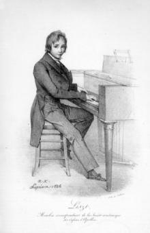
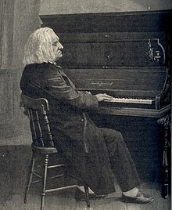

Franz Liszt (Raiding, Imperio austríaco, 22/10/1811, Imperio alemán, 31/07/1886) fue un compositor austrohúngaro romántico, un virtuoso pianista, director de orquesta, profesor de piano, arreglista y seglar franciscano. Su nombre en húngaro era Liszt Ferencz, según el uso moderno Liszt Ferenc, y desde 1859 hasta 1865 fue conocido oficialmente como Franz Ritter von Liszt.
Liszt se hizo famoso en toda Europa durante el siglo XIX por su gran habilidad como intérprete. Sus contemporáneos afirmaban que era el pianista técnicamente más avanzado de su época y quizás el más grande de todos los tiempos. También fue un importante e influyente compositor, un profesor de piano notable, un director de orquesta que contribuyó significativamente al desarrollo moderno del arte y un benefactor de otros compositores y artistas, intérpretes o ejecutantes, en particular de Richard Wagner, Hector Berlioz, Camille Saint-Saëns, Edvard Grieg y Aleksandr Borodín.
Como compositor, fue uno de los más destacados representantes de la Nueva Escuela Alemana («Neudeutsche Schule»). Compuso una extensa y variada cantidad de obras para piano (rapsodia, estudios, transcripciones, etc.), en estilo concertante para piano y orquesta y también una extensa producción orquestal. Influyó en sus contemporáneos y sucesores, y anticipó algunas ideas y tendencias del siglo XX. Algunas de sus contribuciones más notables fueron la invención del poema sinfónico, desarrollando el concepto de transformación temática como parte de sus experimentos en la forma musical, y hacer desviaciones radicales en la armonía.

El padre de Liszt, como amante de la música y miembro de la Society of Dilettanti, tocaba el piano, el violín, el violonchelo y la guitarra. Trabajó al servicio de Nicolás II de Esterházy y conoció personalmente a Joseph Haydn, Johann Nepomuk Hummel y Ludwig van Beethoven, e incluso actuaba de vez en cuando con los dos primeros en la capilla real. A la edad de seis años, Franz Liszt comenzó a escuchar con atención a su padre tocar el piano, al tiempo que mostraba interés por la música sacra y la música romaní. Adam conocía la capacidad musical de su hijo y a los siete años le impartió su primera clase de piano. Franz comenzó a componer de manera elemental cuando tenía ocho años, en 1819, y a hacer improvisaciones. Ese mismo año realizó su primera actuación como pianista. En octubre y noviembre de 1820, a la edad de nueve años, apareció en conciertos en Sopron y Bratislava. Su padre consiguió que Franz fuera presentado ante la Corte de la Casa de Esterházy como niño prodigio.
Adam consiguió fondos de la nobleza para la educación de su hijo en Viena a manos de Karl Czerny, discípulo de Beethoven y Hummel. Franz también estudió composición con Antonio Salieri en la época en la que fue director musical en la corte vienesa. Adam había intentado previamente que Hummel fuese profesor de Franz, pero los honorarios de este eran demasiado altos para la familia Liszt. Por el contrario, Czerny aceptó dar a Liszt clases diarias de forma gratuita. Su debut en público en Viena tuvo lugar el 1 de diciembre de 1822, en un concierto en el Landständischer Saal, que fue un gran éxito. Fue recibido en los círculos aristocráticos de Austria y Hungría y también se reunió con Beethoven y Schubert. En la primavera de 1823, Adam pidió al príncipe Esterházy que prolongara el permiso de ausencia de un año que tenía durante dos años más. Ante la negativa del príncipe, dejó de estar bajo su servicio. A finales de abril, la familia regresó a Hungría por última vez porque Adam quería presumir por su brillante hijo ante sus compatriotas en varios conciertos que tuvieron lugar en Pest. A finales de mayo, la familia regresó de nuevo a Viena.
Hacia finales de 1823 o principios de 1824, se publicó la primera composición de Liszt, una Variación sobre un vals de Diabelli (ahora S.147), que era la variación número 24 de la parte II de la Vaterländischer Künstlerverein (Asociación patriótica de los artistas). Esta antología, realizada por encargo de Anton Diabelli, estaba formada por cincuenta variaciones sobre su vals, compuestas por cincuenta compositores diferentes (en la segunda parte). La Parte I está formada por treinta y tres variaciones de Beethoven sobre el mismo tema, que son conocidas como Variaciones Diabelli, Op. 120.
El 20 de septiembre de 1823, la familia Liszt abandonó Viena para dirigirse a París. Por el camino, Liszt dio conciertos en Múnich, Augsburgo, Stuttgart y Estrasburgo para su sustento y el de su familia. En Miesich se consideraba que poseía un talento similar al de Wolfgang Amadeus Mozart cuando era niño. Finalmente, el 11 de diciembre de 1823, la familia llegó a París. Al día siguiente, Adam Liszt junto con su hijo fue al conservatorio de la ciudad, esperando que el niño fuera aceptado como estudiante. Luigi Cherubini, director del centro, les dijo que, de acuerdo con una nueva norma que él mismo había instaurado, sólo se permitía estudiar en el Conservatorio de París a ciudadanos franceses. Por tanto, Adam Liszt se convirtió en el maestro de piano de su hijo. Franz practicaba con escalas y estudios con un metrónomo y también interpretaba una serie de fugas de Johann Sebastian Bach todos los días, transponiéndolas a diferentes tonalidades.
En el verano de 1827, Liszt enfermó. Adam Liszt fue con su hijo a Boulogne-sur-Mer, una ciudad balneario junto al Canal de la Mancha. Mientras Liszt se estaba recuperando, su padre cayó enfermo de tifus y falleció el 28 de agosto de ese mismo año. Fue enterrado en Boulogne y Franz nunca visitó su tumba.
Con la muerte de su padre, la carrera concertística de Liszt como niño prodigio terminó. Años más tarde, el propio compositor tendría siempre una actitud escéptica con respecto a su carrera como niño prodigio. Si bien había ganado mucho dinero y un nombre destacado, no había tenido oportunidad de desarrollar su educación en general. Suplió esta carencia mediante la lectura intensa. A partir de la década de 1830, comenzó a leer vorazmente y para el momento de su muerte, en 1886, había adquirido varios miles de libros. Escribió a Lina Ramann, en marzo de 1880, sobre su obra compositiva como niño prodigio, afirmando que nada había conseguido porque no había nada en ella. Según creía, tanto para jóvenes como para viejos compositores siempre era mejor que los manuscritos se perdieran.

Después de la muerte de su padre, Liszt regresó a París y, durante los siguientes cinco años, vivió con su madre en un pequeño apartamento. Renunció a viajar y, para ganar dinero, comenzó a impartir clases de piano y composición, a menudo desde primeras horas de la mañana hasta la noche. Sus alumnos estaban dispersos por toda la ciudad y, a menudo, tenía que recorrer largas distancias para visitarlos. Debido a ello, en ocasiones el compositor se sentía inseguro y también adquirió el hábito de fumar y beber, hábitos que lo acompañarían durante toda su vida.
Al año siguiente, se enamoró de una de sus alumnas, Caroline de Saint-Cricq, la hija del que a la sazón era ministro de comercio de Carlos X. Sin embargo, su padre insistió en que el romance no fructificara. Liszt volvió a caer enfermo (incluso se llegó a publicar una nota necrológica en un periódico de París) y sufrió un largo periodo de dudas religiosas y pesimismo. Volvió a declarar su deseo de unirse a la Iglesia católica, pero fue disuadido, esta vez por su madre. Tenía muchas discusiones con Félicité Robert de Lamennais, que actuaba como su padre espiritual, y también con Chrétien Urhan, un violinista de origen alemán, que lo introdujo en el sansimonismo. Urhan también escribió música que era anti-clásica y muy subjetiva, con títulos como Elle et moi, La Salvation angélique y Les Regrets, y pudieron estimular los gustos del joven Liszt por el Romanticismo musical. Igualmente importante para él fue la seria defensa que hizo Urhan de Franz Schubert, que pudo haber estimulado su propia devoción a lo largo de su vida por la música del compositor vienés.
Durante ese periodo, el compositor leyó mucho para paliar las carencias en su educación en general y pronto entabló contacto con muchos de los autores y artistas destacados de la época, incluyendo a Victor Hugo, Alphonse de Lamartine y Heinrich Heine. No compuso prácticamente nada en esos años. Sin embargo, la Revolución de julio de 1830 le inspiró para esbozar una sinfonía revolucionaria basada en los sucesos de esos «tres días gloriosos» y tomó un gran interés en los acontecimientos que lo rodearon. Conoció a Hector Berlioz el 4 de diciembre de 1830, el día después del estreno de la Sinfonía fantástica. La música de Berlioz causó una fuerte impresión en él, especialmente después, cuando escribió composiciones para orquesta. También heredó de Berlioz la cualidad «diabólica» de muchas de sus obras.

Tras asistir a un concierto de Niccolò Paganini el 20 de abril de 1832 a beneficio de las víctimas de la epidemia de cólera en París, Liszt tomó la determinación de convertirse en un gran virtuoso del piano, como lo era Paganini del violín. La ciudad se había convertido en el nexo de las actividades pianísticas, con docenas de pianistas dedicados a la perfección de la técnica al teclado. Algunos, como Sigismund Thalberg y Alexander Dreyschock, centrados en los aspectos específicos de la técnica (por ejemplo, el «efecto tres manos» y octavas, respectivamente). Aunque esta escuela de interpretación pianística fue llamada «trapecio volante», esta generación de pianistas también resolvió algunos de los problemas más difíciles de la técnica del instrumento, aumentando el nivel general de interpretación a cotas inimaginables anteriormente. La fuerza y capacidad de Liszt de destacar en este grupo se encontraba en el dominio de todos los aspectos de la técnica pianística cultivados por separado y con asiduidad por sus rivales.
Liszt pasó años estudiando las posibilidades del piano del mismo modo que Beethoven lo había hecho en su juventud, pero con un piano mucho más moderno y que evolucionaba año tras año, sobre todo gracias a la investigación que el fabricante Érard dedicaba al instrumento con la colaboración de pianistas y músicos de relieve, como el propio Franz.
En 1833, realizó transcripciones de varias obras de Berlioz, incluyendo la Sinfonía fantástica. Su principal motivo para hacerlo fue, especialmente con la Sinfonía, ayudar al empobrecido Berlioz, cuya sinfonía permanecía desconocida y sin publicar. Liszt asumió los gastos de la publicación de la transcripción y la interpretó varias veces para ayudar a popularizar la partitura original. También entabló amistad con un tercer compositor que lo influyó, Frédéric Chopin; bajo su influencia, el lado poético y romántico de Liszt comenzó a desarrollarse. En esa época, compuso varias obras o piezas basadas en otras de Paganini, como los Grandes Études de Paganini S. 140 (1838-1839) o Grande Fantaisie de bravoure sur La Clochette S.420 (1832-1834).

Entre 1840 y 1847, Liszt decidió hacer giras de conciertos por Europa. Además, en 1840 inventó el recital de piano tal y como se conoce hoy en día, y empezó también a desarrollar vagamente su faceta como director de orquesta. Sus viajes le llevaron a conocer prácticamente toda Europa, llegando a ciudades tan distantes como Sevilla, Valencia y Moscú. Pasó las vacaciones con la condesa y sus hijos en la isla de Nonnenwerth en el Rin en los veranos de 1841 y 1843. En la primavera de 1844, la pareja se separó definitivamente. Ese fue el periodo como pianista de conciertos más brillante de Liszt: recibió honores y fue adulado por todos los sitios por los que pasó. Dado que el pianista aparecía tres o cuatro veces a la semana en conciertos, se podría suponer que se presentó en público más de un millar de veces durante este periodo de ocho años. Además, su gran fama como pianista, que mantendría mucho después de que se retirara oficialmente de los escenarios, se basó principalmente en sus logros durante esta época.
Después de 1842, la «Lisztomanía» recorrió toda Europa. La acogida que Liszt obtenía como resultado era cercana a la histeria colectiva. Las mujeres se peleaban por sus pañuelos de seda y guantes de terciopelo, que hacían trizas, como recuerdos. Ayudaba a fomentar este ambiente la personalidad magnética del artista y su presencia en el escenario. Muchos de los testigos declararon más tarde que la forma de interpretar del pianista elevó el estado de ánimo de los asistentes a un nivel de éxtasis místico.
También contribuyó al aumento de su reputación el hecho de que el pianista donara gran parte de sus ingresos a la caridad y causas humanitarias. De hecho, Liszt había ganado tanto dinero durante sus más de cuarenta años que prácticamente todos sus honorarios de interpretaciones a partir de 1857 estuvieron destinados a fines caritativos.
En febrero de 1847, Liszt actuó en Kiev. Allí conoció a la princesa Carolyne zu Sayn-Wittgenstein, que permaneció junto a él durante la mayor parte del resto de su vida. Ella lo convenció para concentrarse en la composición, lo que significaba renunciar a su carrera como viajante virtuoso. Después de una gira por los Balcanes, Turquía y Rusia ese verano, Liszt dio su último concierto de pago en Elizavetgrad en septiembre. Pasó el invierno con la princesa en su finca en Woronince. Al retirarse del circuito de conciertos a los treinta y cinco años, cuando aún estaba en la cúspide de su carrera, Liszt logró mantener sin tacha la leyenda de su forma de tocar.
Al año siguiente, Liszt aceptó una invitación de larga duración de la Gran Duquesa María Pávlovna de Rusia para establecerse en Weimar, donde había sido nombrado maestro de capilla extraordinario en 1842, permaneciendo allí hasta 1861. Durante este periodo, ejerció como director de orquesta en los conciertos de la corte y en ocasiones especiales en el teatro. Dio clases a varios pianistas, entre ellos el gran virtuoso Hans von Bülow, que se casó con su hija Cósima en 1857 (años después, esta se casaría en segundas nupcias con Richard Wagner). También escribió artículos en defensa de Berlioz y Wagner. Por último, Liszt tuvo tiempo suficiente para componer y durante los siguientes doce años revisó o produjo las piezas orquestales y corales sobre la que recae principalmente su reputación como compositor. Sus esfuerzos a favor de Wagner, que entonces estaba exiliado en Suiza, culminaron con el estreno de Lohengrin en 1850.

La década de 1860 fue un periodo de grandes catástrofes en la vida privada del compositor. El 13 de diciembre de 1859, falleció su hijo Daniel y el 11 de septiembre de 1862, su hija Blandina también murió. En cartas posteriores a sus amigos, anunciaba que se retiraría a una vida solitaria. La encontró en el monasterio de la virgen del Rosario, a las afueras de Roma, donde estableció su residencia en un pequeño y espartano apartamento el 20 de junio de 1863, uniéndose a la Orden Franciscana el 23 de junio de 1857.
En las décadas de 1860 y 1870, Liszt pasó la mayor parte de su tiempo componiendo obras corales e impartiendo clases gratuitas a un grupo muy selecto de músicos, entre los que se encontraban Moriz Rosenthal, Sophie Menter, Eugen d'Albert o Emil von Sauer.
Liszt fue invitado de nuevo a Weimar en 1869, para dar clases magistrales de piano. Dos años más tarde, se le pidió que hiciera lo mismo en Budapest en la Academia de Música. Desde entonces y hasta el final de su vida, hizo viajes regulares entre Roma, Weimar y Budapest, continuando lo que él llamó su «trifurquée vie» o triple vida. Se estima que Liszt viajó al menos 6500 kilómetros por año durante este periodo de su vida —una cantidad excepcional, dada su avanzada edad y los rigores de la carretera y el ferrocarril en la década de 1870—.
Durante su intensa vida de viajes, realizó sus últimos conciertos y se dedicó a la composición de sus últimas obras, que ya en esta época se caracterizaban por un estilo atonal muy alejado de sus primeras composiciones clásicas. Destacan como obras representativas de este periodo Nuages gris o la Bagatela sin tonalidad.
El 2 de julio de 1881 Liszt se cayó por las escaleras del hotel en el que se hospedaba en Weimar. Aunque sus amigos y colegas se dieron cuenta de la hinchazón que tenía en pies y piernas cuando había llegado a la ciudad el mes anterior, el compositor había gozado razonablemente de buena salud hasta ese momento, y su cuerpo conservaba la esbeltez y flexibilidad de años anteriores. El accidente, que lo inmovilizó durante ocho semanas, cambió su estado. Se manifestaron una serie de dolencias: hidropesía, asma, insomnio, una catarata en el ojo izquierdo y una enfermedad cardíaca crónica, que contribuyó finalmente a la muerte de Liszt. Poco a poco, su estado de ánimo decayó y lo invadieron sentimientos de desolación, desesperación y muerte, a los que dio expresión en sus obras de este periodo. Como le dijo a Lina Ramann, «llevo una profunda tristeza en el corazón que de vez en cuando debe estallar en sonido».
Falleció en Bayreuth el 31 de julio de 1886, a la edad de setenta y cuatro años. La causa oficial de su muerte fue la neumonía que podría haber contraído durante el Festival de Bayreuth, organizado por su hija Cósima. Se ha especulado con la posibilidad de que una negligencia médica pudiera haber desempeñado un papel directo en la muerte de Liszt.
Liszt es más conocido por su faceta como pianista, pero fue un compositor prolífico que compuso extensamente para muchos instrumentos. Debido a su experiencia como virtuoso técnico vanguardista del piano, las obras de Liszt para dicho instrumento están a menudo marcadas por su dificultad. Es muy conocido como compositor de música programática, y por basar sus composiciones en elementos extramusicales, tales como la poesía o la pintura. A Liszt se le atribuye la creación del poema sinfónico, que es una obra programática para orquesta que consta generalmente en un único movimiento.
Sus obras para piano se dividen normalmente en dos tipos. Por un lado, están las «obras originales» y por el otro las «transcripciones», «paráfrasis» o «fantasías» de obras de otros compositores. Ejemplos del primer grupo son obras como la pieza Harmonies poétiques et religieuses de mayo de 1833 y la Sonata para piano en si menor (1853). Las transcripciones de las canciones de Schubert, sus fantasías sobre melodías operísticas y sus arreglos para piano de sinfonías de Berlioz y Beethoven son ejemplos del segundo tipo. Como caso especial, también realizó arreglos para piano sobre obras instrumentales y vocales propias. Ejemplo de este tipo es Liebesträume.